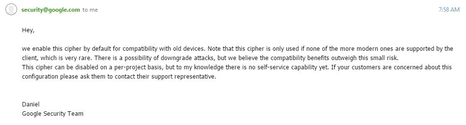
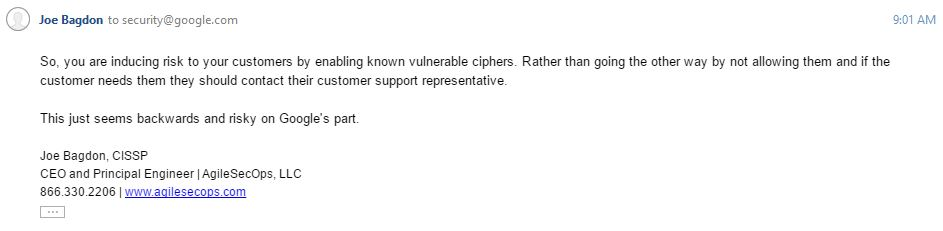
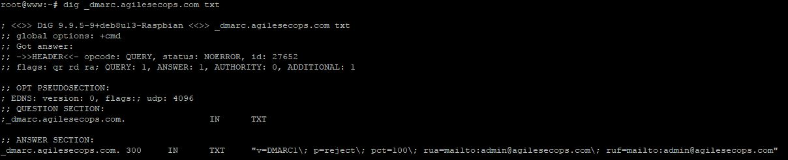
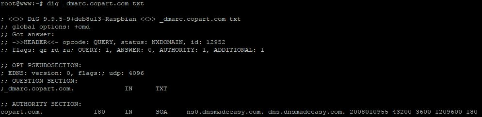
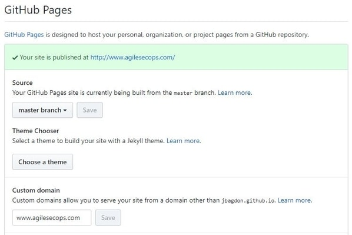
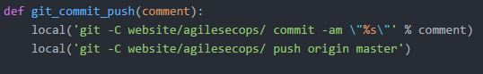
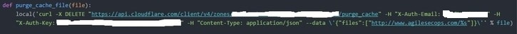

This was first pointed out to me by a customer who just migrated to the Google Cloud. It appears that when you setup Google Cloud load balancers and SSL the default is to include a 3DES cipher. This cipher was found to be vulnerable to what is called a birthday attack and falls under notifications CVE-2016-2183, CVE-2016-6329. You can find more information regarding this vulnerability at the following page:
I wrote to Google and told them about the issue. Their response was:
And my response:
I also wondered about other Google pages such as https://mail.google.com and found that they have the same cipher enabled.
What's interesting is that the sweet32.info page states that not only has this been demonstrated but, "this attack is comparable to the recent attacks on RC4" which we have all abandoned that cipher.
Google has a team of security researchers called Project Zero. Google decided to form a full-time team dedicated to finding such vulnerabilities, not only in Google software but any software used by its users. On the initial Google blog post announcing the start of the Project Zero team they state, "Security is a top priority for Google. We've invested a lot in making our products secure, including strong SSL encryption by default for Search, Gmail, and Drive, as well as encrypting data moving between our data centers."
So my question is, if security is so important to Google, especially when they are pointing out SSL encryption, then why are they using vulnerable ciphers by default? Especially in products like Gmail of which no one has the ability to change.
Something to think about...
On the sweet32.info page they state, "In our proof-of-concept demo, this attack currently takes less than two days, using malicious Javascript to generate traffic. Keeping a web connection alive for two days may not seem very practical, but it worked easily in the lab."
So, how long do you have a session open to your Gmail account or possibly other Google products?
Contact AgileSecOps if you need help ensuring your environment is setup correctly.
There are now a lot of articles out there regarding how people don't use DMARC to protect against email spoofing. However, the email server that is receiving the email must also be configured to check for proper SPF and DKIM records. I was curious as to how many servers out there were configured to perform such checks. So, I setup a quick advertising campaign using MailChimp. MailChimp sends email from their IP as if it was coming from your domain. At first, I did not setup the appropriate SPF and DKIM records in my DNS that allows MailChimp to send as my domain.
The results...
I only did a small sample of 230 emails and out of those, I had 40 bounces. The bounces could have been for any reason but I wondered if it was because the destination server was actually doing what they should be doing....checking the SPF and DKIM records.
Next, I setup MailChimp with the appropriate DNS settings to allow them to send from my domain. I then resent the same email to the original 40 bounced addresses and they all went through.
So, it appears in my small test, that roughly 17% of the destination servers were actually configured to check for spoofed inbound emails.
Contact AgileSecOps if you need help ensuring your email environment is setup correctly.
Many Fortune 500, FTSE 100 and ASX 100 companies have failed to properly implement the DMARC standard, exposing their customers and partners to phishing and other email-based attacks, according to email security firm Agari.
In a report titled “Global DMARC Adoption Report: Open Season for Phishers,” Agari, which in the past years has obtained tens of millions of dollars in funding, shared the results of its analysis into the adoption of DMARC.
DMARC (Domain-based Message Authentication, Reporting and Conformance) is an email authentication, policy, and reporting protocol designed to detect and prevent email spoofing.
This comes as a surprise since email has been the main vector of attack for many years. Additionally, implementing DMARC is so very simple. All it takes is one text record in your DNS. Looking at my DNS you can see that I have it setup and I receive daily reports of (mainly) successful email traffic. If you are on Linux, you can use the dig command to see if a domain is setup with DMARC and checkout their policy. Here is what my domain looks like:
Now when someone tries to send email from my domain and the originating address is different than the IP in my DNS the destination email server should reject the message. This protects my brand reputation, protects my company from receiving spoofed emails from our own domain, as well as protects others out on the Internet from receiving spoofed emails from my domain.
Let's take a look at another company. This is a large company that I've worked for in the past and I know that some of them read my blog. So, I bet they'll adopt DMARC soon.
From the response, you can see that they have no policy. This is placing their company at a greater risk.
Contact AgileSecOps if you have any questions or need help setting up DMARC for your organization.
Information Security is changing in many ways. It is being incorporated into DevOps. IT Security Products are becoming more dynamic and capable. Additionally, the strategy of a good security defense has changed from only perimeter defense to a totally holistic approach that includes all employees. And, the worst part, there is a decline in qualified people to meet the job market demand in the IT Security community.
We still need all of the same practices that we had previously starting with security at the perimeter. However, we need to change our tactics to meet those of the attacker's. Now, as long as everything else is in place, the weakest link to a company is its people. This is why having Security part of the company culture is important.
The people that make up a company affect its security considerably. Everyone in the company comes into play. Email has become one of the biggest entry points for attacks in the recent years. Plus, developers need to develop secure code that is free from vulnerabilities. Another example, your Finance department needs good security guidance when setting up the transfer of funds. I've seen too many companies transfer funds to a malicious individual just because they were able to craft an email that made it look like it came from someone with the authority to make the transfer happen.
Depending on the size of the company it can be rather challenging to get Security embedded into the culture. Normally, I find it is easier with the small to medium businesses that are more open to change. However, training is key to making this transition and the support has to come from the top.
Training:
- All employees on email phishing
- All employees on the use of cloud services. What is allowed and what is not.
- All employees on data classification. How to handle and protect data at different levels.
- Developers on secure coding practices
- IT staff on properly securing hosts, cloud infrastructures, and applications, Networks, etc
When people mention training the first thing that they think of is mandatory company training. This is boring and most people fade off thinking of other items. So, training should be spread out over time and should be creative. For example, use an email phishing tool and see how your business does in not clicking on the link. Redirect those that did click on the link to a simple training page. Report status of the phishing tool at the company meeting and state why it's important to not click on links in emails. Provide alternative solutions. Also, make the training and talk close to home. Talk from the perspective of, if this would have happened and someone got into your personal bank account, what could be the impact.
This type of training can be adapted to almost every different aspect of the security of the company.
For example:
- Call the helpdesk and try to reset a users password.
- Send a crafted email to finance and try to get them to transfer some funds. If you do this then you might want to let someone know in charge of finance so the transfer doesn't actually occur.
Get security ingrained into the minds of your leadership. They should always be thinking about it and asking questions.
If Security can become part of the culture of the company then this reduces the overall risk to the company and may even reduce the Security budget.
Contact AgileSecOps to find out how we can help your company's culture.

September is a month of remembrance for me. Due to events that happened in the past, it's time to reflect on all of those people that sacrifice on a daily basis. Some do this as I did by serving in the military while others run non-profit organizations in order to help others.
I'd like to take the month of September and honor those non-profit organizations by providing free IT Security services.
For this to happen I need to know the non-profit organizations that need help. Please contact me at info@agilesecops.com
As a new business, this comes at an extreme cost to me. So, I started a GoFundMe at https://www.gofundme.com/agilesecops to help offset the cost of travel and any equipment that these companies may need.
The types of services that can be offered are dependent on if I'm able to perform them remotely or if the above funding comes in.
Thanks in advance to everyone that helps out.
How can you prevent an attack?
Unfortunately, there is no silver bullet. Cyber criminals are constantly innovating and every cyber-attack is constructed using well-defined phases, which are completed sequentially. Rendering a cyber-attack unsuccessful is all about blocking one or more of these stages.
You therefore need to look at a layered approach to protection. This means:
- Securing your entry points.
- Filtering web traffic and blocking malicious sites.
- Blocking users from certain websites of which they should have no access.
- Blocking macro’s and ActiveX along with not allowing external content from running inside office applications.
- Scanning all emails and attachments for phishing.
- Educating your employees to increase their awareness of phishing techniques and general vigilance.
- Ensuring USB devices are scanned or even restricted in some parts, with auto play disabled at the very least.
- Locking down users’ own (BYOD) devices on secured separate networks from production systems.
- Deploying ransom behavioural tools and scanning your network traffic.
With this layered approach, research has shown that most ransomware attacks can be stopped at the gateway level, through email and URL blocking. The last line of defence is endpoint anti-ransomware behavioural monitoring, designed to proactively detect and block ransomware execution. However, you want to stop this at the gateway and so ensure that your intrusion prevention, email and web scanning solutions are suitably robust to protect your edge networks.
The one item I would add is to ensure you are applying patches as soon as they come out
This article was originally published by IT SECURITY GURU please visit their site to read the entire article.
Disclaimer: You need to know how to code to create a website this way. Remember, the title is on the cheap not easy.
First, you'll want to write your site. I use a combination of jQuery and a slimmed down version of Bootstrap to help control the look and feel of the site. The rest of the site is just static HTML pages. With the exception of the addition of the Google search toolbar on the main blog page. Instead of using a database and providing my own search capability I'm leveraging Google to do this for me.
All of my site is on Github in a public repository jbagdon/agilesecops. Github has this fantastic feature called Github pages. This allows you to publish a repository to a website.


From there I hook up Cloudflare to add a little acceleration and magic with page rules to ensure everything is working as I like.
If I stopped right now I would have a relatively good site with some pretty good uptime and speed. However, Github does go down from time to time. So, Cloudflare has a great service called load balancing that does many things. I'm only using it to perform checks on two sites and if one goes down then serve traffic out of the other site.

So, yes, I have a mirrored site hosted somewhere else (for free) and if Github does go down then the Cloudflare load balancer would redirect traffic to the secondary site. Once Github is back up then it becomes primary again.
Hmm, what it Cloudflare goes down? Well, I have two choices... I can ride it out or if it looks like it's going to be a long outage I can change my DNS to only resolve to my backup site. The change in DNS settings would take some time to propagate through the Internet but it would be a last resort and at least it's an option.
All of this is managed with Python Fabric. I have automation for committing and pushing code to Github as well as pushing code to the secondary site. I also have automation for purging either a single file or the entire cache within Cloudflare using their API.

All of this automation, multiple sites, load balancing comes in real handy. Normally, I will push updates to the secondary site and take a look to see if everything looks good and nothing broke. However, last week I was brave, and just pushed right out to Github. Well, my site broke... Good news, all I had to do was take Github out of the Cloudflare load balancer and clear the cache and I was up and running. I fixed my error, pushed the new code to Github, tested it, then put Github back in the load balancer as primary.
There is some real power out there and it can be harnessed if you know what you're doing. All of this is costing me $5 a month. That's less money than any non-redundant site builder out there. I also have more features, although you need to be techy to use them.
If you like what you read and you want other ideas like this then send me an email. I'd be happy to talk to you.
10 GDPR myths debunked
Aug 11, 2017
Don’t be fooled. GDPR implementation is a complex undertaking and being unprepared could have significant and expensive repercussions.
Myth 1: GDPR is like Y2KSome firms are tackling GDPR with the same hysteria prevalent during the Y2K millennium bug, approaching GDPR as a single project with a defined end date. But GDPR is not just a “point in time” activity. Also, many firms believe that phenomena like Y2K and now GDPR are overblown. But compliance with GDPR should be the default position for legitimate firms.
Myth 2: No one will get finedSome think the risks of heavy fines are over-exaggerated. But targeted enforcement is likely, and authorities may go after high-profile companies or companies with particularly egregious data processing faults. Assuming no one will get fined may pose high-impact risks.
Myth 3: Everyone will get fined 4 percentCertain factors — the types of data affected, degree of negligence, a company’s prior infringements, and others — will affect fines. Two tiers of fines, either 2 percent or 4 percent based on the previous year’s revenues, will apply, depending on which rule has been infringed.
Myth 4: Noncompliance is equivalent to a security breachCompliance with all the GDPR’s fundamental personal data processing principles will be important. It is likely that some authorities will seek to send a message by imposing high fines on firms that infringe those or other principles, especially if they are doing so deliberately — even if a security breach is not involved.
Myth 5: For security breaches, the fine is only 2 percent“Controllers,” companies that determine the purposes and means of the processing of personal data, can receive higher-tier fines for security breaches. “Processors,” companies that process personal data, can receive lower-tier fines for security breaches, but can still be sued. Risks could be large if non-governmental organizations (NGOs) sue on behalf of numerous affected individuals.
Myth 6: All security breaches must be reported within 72 hoursIn fact, only personal data breaches will have to be reported, and reporting obligations will vary with a firm’s role as controller or processor. Controllers’ reporting obligations and timing depend on the risk. Processors will have to notify their controllers of personal data breaches without delay.
Myth 7: It will be safest not to report security breachesSome firms may think that if they conceal security breaches from authorities, they will not get fined. This is untrue: they could be found out anyway, and could be fined for failing to report data breaches.
Myth 8: To comply with GDPR, we should encrypt everythingGDPR requires companies to implement measures to ensure a level of security appropriate to the likelihood and severity of risks among individuals for every situation, including storage and transmission. Security measures should be risk-based depending on the available technology and the costs involved.
Myth 9: Companies will be able to outsource GDPR liability for security to third partiesIn fact, it will be critical to make sure that contracts sufficiently cover risks. Processors will want to carry out due diligence on both customers and subcontractors. Insurance merits investigation — not just cyber-insurance but also liability insurance, though regulatory fines may not be insurable.
Myth 10: Data location is not a security issueWhile data location may not be a technical security issue, it is one factor that may be relevant to overall security. Some firms may think that properly encrypted personal data may safely be stored outside the EU if they alone can access the keys. However, the geographic location of personal data is highly regulated under data protection laws as a legal compliance matter. Also, many EU regulators take the view that data location is a security issue.
Today's Top News
Aug 10, 2017
- 60% of Infosec Execs Are Boosting SOC Deployments - A survey of security executives and managers finds a majority are expanding or upgrading their current SOC readiness.
- I think it's about time that companies start to ramp up on Security tallent. I hope they can find the workers.
- Why the majority of MSPs struggle to find enough cybersecurity pros to hire - Some 92% of MSPs now offer cybersecurity services, but a shortage of qualified staff may put customers at risk of ransomware attacks, according to a Kaspersky Lab report.
- I really think this is due to the overall shortage of qualified Security Professionals that are currently in the market. If I can recall correctly, reading past posts, the trend is for it to get even worse as time goes by.
- Destructive, disk-encrypting Mamba ransomware springs back to life - A powerful form of ransomware which encrypts whole hard drives instead of just files has suddenly returned - and there's no way for victims to decrypt the data.
- If you didn't learn before to have good backups and a response to ransomware then you better start planning now.
- TalkTalk fined £100k for exposing personal sensitive info - 21,000 accounts handled by Indian outsourcing biz exposed
- Cybersecurity workers face many challenges on the job. - Here are 10 bad habits they must avoid in order to be most effective.
- 5 Best Security Practices When Building Applications
- Debian move marks beginning of the end for TLS 1.0 and 1.1 - TLS 1.20 fixes a vulnerability so now's the time to check that the software you use and the software you manage supports it
SMBs Practice Better IoT Security Than Large Enterprises Do
Aug 09, 2017
Small-to midsized businesses are more prepared than big ones to face the next IoT attack: good news given the sharp rise in IoT botnet attacks in the first half of 2017, new reports released today show.
DARKReadingEmail Etiquette Gone Wrong
Aug 09, 2017

I felt the need to point out to a few people the correct way of using email. This isn't anything new but for some, it tends to be very difficult.
This morning a recruiter sent out an email to a bunch of people by placing all of the individual's email addresses in the CC field. This was the first mistake. When emailing many people that don't know each other put them all in the BCC field. This way the recipients don't know who else the email went to. This is the original email from the recruiter:

Next, when replying to such an email don't reply to all. This can cause other problems like people not liking your response or something else. In this case, it was that an individual had passed his CISSP test but hadn't yet been signed off by another CISSP and had his new cert in his signature line. The following was the first reply to all sent from who I believe is part of a local ISC Chapter:

What happened from here was a local ISC2 chapter president started an email chain (reply to all...didn't I say not to do that) dragging this young man over the coals for putting his cert in his signature block prior to being officially signed off. Now, I know what the young man did was not correct. However, an ISC2 chapter president acting high and mighty to all in the email list probably isn't the best way to mentor a new CISSP. The following is from the President of a local ISC Chapter (this was also a reply to all):

Finally, don't put in writing what you don't want others to see. When I asked to stop the reply to all or I would complain to the ISC Mr. President told me that my threats hold no weight. Having everything in writing I wrote a formal complaint, had it notarized (they really should make the process easier), and sent it priority mail to the ISC2 complaints department.

Lessons learned:
- Use BCC and not CC when emailing a bunch of strangers or a group of people within your organization.
- Don't reply to all if you are only talking to one person.
- Don't put in a written format something that might come back to bite you in the end.
- AND, people in the position of authority should mentor others and not drag them over the coals when they make a mistake.
The Patch Cycle
Aug 08, 2017

Historically, corporations have patched on a scheduled timeline. Following detailed policies and procedures. Some of which have been dictated by the industry they are within. For example, PCI states that critical updates/patches must be applied within 30 days. This might work in an environment under the control of PCI. However, a lot of organizations take this as their company wide standard.
We have seen an ever increasing threat landscape hitting the end user within organizations world wide. While patching a controlled production environment every 30 days may be sufficient, it's proving to not be sufficient in the user environment. Companies need to adapt to the increased threat and patch more often.
How often should you patch?
Organizations need to take a risk based approach and analyze all patches that may apply to their user environment. This includes both the operating system as well as all other applications that reside on user systems. Given the current threat landscape, and how fast we have seen malware spread, I would suggest the following patch schedule for user systems:
- Operating System or applications that have remote code execution vulnerabilities need to be patched within 24 hours of a patch being released.
- Operating System or applications that have privilege escalation vulnerabilities should be patched within 7 days.
- All other patches should be applied within 30 days.
All of this should tie into your corporate vulnerability management program. Vulnerability scanning of your external production environment should occur on a weekly basis. This should ensure you are catching and remediating any unwanted changes performed that increase your attack surface. Internal authenticated scanning of your user environment should also take place on a weekly basis. This should provide two things:
- It verifies that the correct patches are installed.
- It identifies any additional vulnerable applications that have been installed by your users.
To some, this might seem like a lot. However, we need to stay ahead of the malicious actors and protect our overall infrastructure.
71% of SMBs are not prepared for cybersecurity risks
Aug 01, 2017

A report published by WEBROOT states that over 70% of small to medium businesses they surveyed were not ready to defend themselves against an attack in 2017. This is not too surprising considering the lack of security talent out there and the ability of businesses to retain this talent.
AgileSecOps can help SMBs with their security issues and concerns. We have roughly 30 years of experience and can either provide consultation services or do the work for you. Our pricing is fair and all you need to do is email or call to get started.
Enhancing Security With Artificial Intelligence
Aug 01, 2017
I'm constantly intrigued about the potential capabilities in Artificial Intelligence (AI). This year at DefCon, there were two speakers that showed how AI could help in an attacking role. I see a tremendous possibility for AI in a security defense role. This would be by no means a way to reduce the workforce but to make things so much more accurate. If we could build something that could learn what normal logging looked like, or what normal email looked like, or anything else...then AI could take automated (with assuming 99.99% accuracy) steps to protect businesses and users against the malicious attacks.
This article was inspired by HELPNETSECURITY.